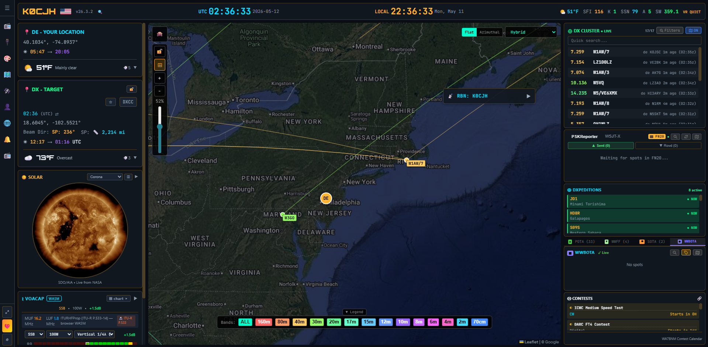
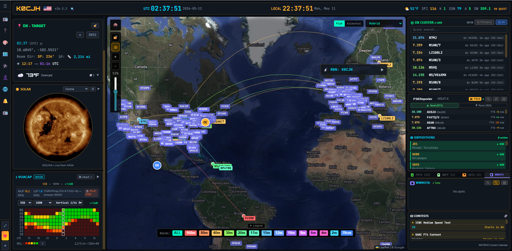
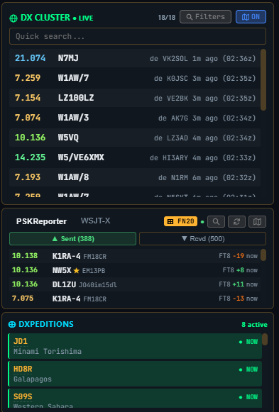
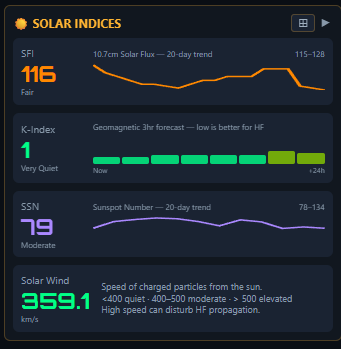
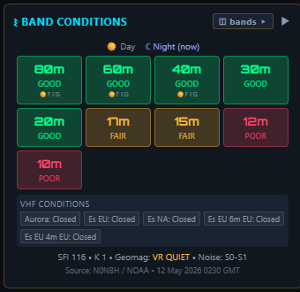
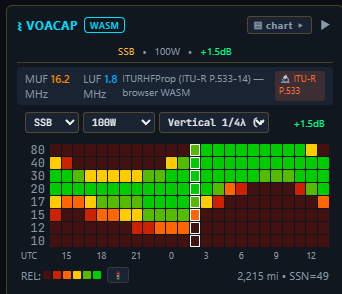
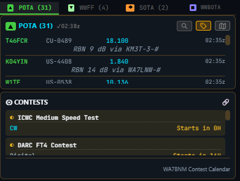
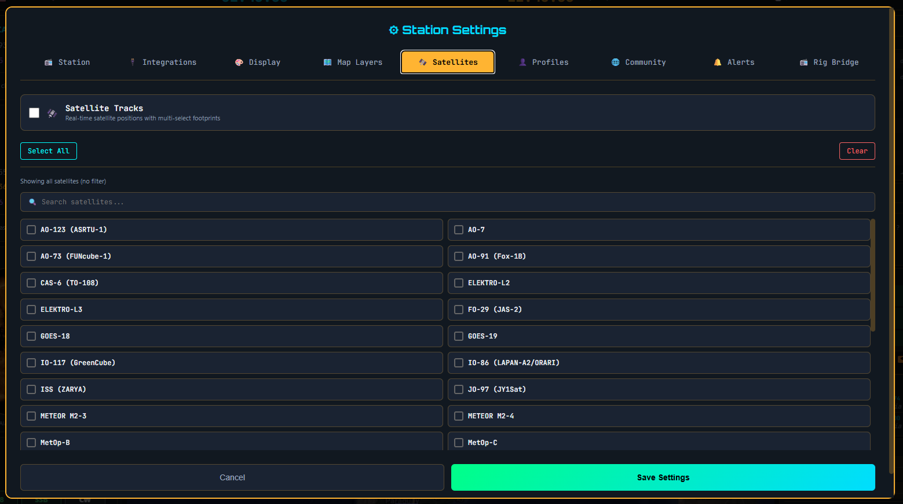

South Florida DX Association · July 8, 2026 · via Zoom
OpenHamClock
A real-time ham radio dashboard
built around the DX chase.
Chris Hetherington · K0CJH
openhamclock.com · github.com/accius/openhamclock
In one breath
Everything a DXer wants — on one screen, in any browser.
- DX cluster, DXpeditions, PSKReporter — filtered the way you chase
- VOACAP propagation run live for your QTH, not a stale screenshot
- Click a spot → your radio tunes
- Free, open source, runs anywhere a browser does
Cloud-hosted at openhamclock.com — or self-host on a Pi, a Mac, a Linux box, in Docker, on
Railway.
Standing on shoulders
For WB0OEW.
Elwood Downey, WB0OEW (SK), built the original HamClock — the one that's been running
on Raspberry Pis in shacks around the world for years.
OpenHamClock is a ground-up rewrite for the modern web. Same spirit, new foundation, friendly to extend.
From the original HamClock
- Single-screen situational awareness
- Map + clocks + space weather
- Honest data, no fluff
What's new in OpenHamClock
- Web-native, responsive UI
- Modular plugin system
- Open source from day one (MIT)
- Rig control + WSJT-X integration baked in
The big picture
One screen. One glance. Everything.

Map · DX cluster · solar imagery · VOACAP · weather · station panels — all one screen.
The map
The map is the application.

Gray-line terminator · great-circle paths · live spots · togglable layers (aurora, radar, satellites,
earthquakes…)
Spots
The DX cluster, the way you wish it looked.

DX Cluster
- Live spots — filter by band, mode, zone, watchlist
- Mode column + Time/Freq/Call sort new
- "Show only DXpeditions" one-click filter new
- Contest filter — tame the contest-weekend firehose new
- Send your own spots right from the panel new
- 30-min retention — see the trend, not just "now"
PSKReporter
- FT8 / FT4 / JS8 / WSPR / JT65 reception, live via MQTT
- Who's hearing you · who you're hearing
- "MySpots" lights up the moment your call hits the cluster
New · July 2026
We run our own DX cluster node now.
- OHC Cluster — an independent node built for OpenHamClock, feeding the hosted site
- Aggregates RBN skimmer spots (CW/RTTY + FT8/FT4) and human spots
- Classic telnet interface — use it from any logger or cluster client, not just OHC
- No more depending on the goodwill (and uptime) of public DXSpider nodes
- Custom cluster logins hardened — reconnect storms contained, dead nodes parked
- Self-hosters can still point at any node they like
Born after a public node sysop suggested we "build our own cluster." OK. Done.
New · For the chase
Know the DX before you call.
Callsign info popup new
- Click any call — in the cluster or on the map
- Name, QTH, grid, country — inline, no browser tab
- Local time at the DX end — is he even awake?
- One click through to QRZ / HamQTH / QRZCQ
DX target intelligence
- Type a callsign → it becomes your DX target new
- Real IANA timezones — DX local time is civil time, not sun time
- Distance, bearing, grids, sunrise/sunset at both ends
Propagation
Real numbers. Real predictions. Live.



-
FT8/FT4/CW predictions run at each mode's real decode threshold — FT8 at −19 dB, not SSB
math with a fudge factor new
-
Kp tracks NOAA's 1-minute estimate — reacts to a storm in minutes, not hours
new
Activations
POTA, SOTA, WWFF, WWBOTA — all on the same map.
POTA — Parks on the Air
SOTA — Summits on the Air
WWFF — Flora & Fauna
WWBOTA — Bunkers on the Air
Click an activator → reference, name, frequency, mode, time. Audio alerts when one shows up on a band
you're watching.

Satellites
Satellites on the same map as everything else.
- Live SGP4 tracking — the standard algorithm
- Pass predictions for your QTH, sorted by AOS
- Footprint + ground track drawn on the map
- Big catalog: AO-91/92, SO-50, ISS, RS-44, FO-29, GOES, METEOR, QO-100 footprint…
- Multi-select — overlay several at once next to your DX spots and activators

Rig control
Click a spot. Your radio tunes.
Transports
- USB CAT — direct, no hamlib
- rigctld (Hamlib) · flrig
- SmartSDR, TCI, RTL-SDR
- Cloud relay — your shack from the road
Radios
- Yaesu, Kenwood, Icom, Elecraft
- FlexRadio, SunSDR, Hermes-Lite 2, ANAN
- WSJT-X / JTDX / MSHV / JS8Call decodes plotted live on the map
Plugin-based Rig Bridge — almost any modern radio over almost any transport. Log with
N3FJP? That's built in now too. new
Since the spring
The project moves fast. A sampler:
- Live aircraft layer + worldwide ATC sectors overlay (~1,000 FIRs)
- Map style rotation for wall displays · earthquake magnitude filter
- 16 languages — Simplified Chinese joined this month
-
Accessibility — full screen-reader pass: live spot announcements, a text view of the map
- Windows install overhaul — one-line PowerShell install that actually works
- Self-hosters get the real P.533 engine — the WASM bundle now ships in local builds
- Band activity heatmap panel · X-ray flux history · selectable PSK retention
Monthly release drops — driven almost entirely by user bug reports and feature requests.
Live demo
Let's go to the actual thing.
openhamclock.com
Open in new tab →
Follow along from home — it's live right now. Presenter: press L, then switch tabs.
Under the hood
Built to be hacked on.
MITLicense
17Rig plugins
50+Contributors
16Languages
6+Map overlays
~5 moProject age
- Map overlays are React hooks — copy a built-in, edit, restart
- Community AddOns folder for userscripts (APRS auto-pos, calculators, news feeds)
Install
Pick your poison.
Zero install
Visit openhamclock.com — wizard asks for callsign + grid. Done in 30 seconds.
Docker
docker-compose up -d
Self-hosted on your LAN. API calls proxied through your backend.
Local (Mac / Linux / Win / WSL)
git clone https://github.com/accius/openhamclock.git
cd openhamclock && npm ci && npm start
Open http://localhost:3000.
Raspberry Pi kiosk
curl -fsSL https://raw.githubusercontent.com/accius/openhamclock/main/scripts/setup-pi.sh | bash -s -- --kiosk
Fullscreen Chromium on boot. Wall-display ready.
Get involved
Try it, break it, tell us about it.
- Try it: openhamclock.com
-
Source:
github.com/accius/openhamclock
- Bugs & features: GitHub Issues — read first, then file
- Facebook group: "OpenHamClock" — most active community channel
- Reddit: r/OpenHamClock
- Code contributions: PRs welcome against the
Staging branch
- Plugins / AddOns: docs walk you through it; happy to mentor
Thank you
To the 50+ contributors who made this real.
And to SFDXA for having me tonight.
73
Chris Hetherington — K0CJH
chris@cjhlighting.com
openhamclock.com · github.com/accius/openhamclock
Questions?